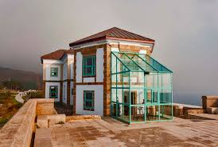

<body bgcolor=”   
black”>

</body>

<center>   </center>

<h4>   <p style="color: #FFFFFF;">  El Hotel O Semaforo  está situado a 3 km de Fisterra, en el faro de Finisterre. Ofrece habitaciones con calefacción y TV vía satélite.

    Las habitaciones del Hotel O Semaforo son cómodas y cuentan con suelo de madera y baño privado con secador de pelo.
    
    El Hotel  alberga un restaurante  a la carta y un bar con terraza, donde podrá relajarse y disfrutar de las vistas al océano y de la maravillosa puesta de sol de la costa da morte .
    
    El hotel cuenta con una zona de conexión Wi-Fi gratuita y un mostrador de información turística. Se ofrece servicio de enlace con el aeropuerto por un suplemento. </p>  </h4>

    <br/>

    <br/>
    
    <h2>   <p style="color: #FFFFFF;">  Servicios más populares </h2>

        <p style="color: #FFFFFF;">    Admite mascotas   </p> 
        <p style="color: #FFFFFF;">  Parking gratis</p>
        <p style="color: #FFFFFF;">    WiFi gratis</p>
        <p style="color: #FFFFFF;">    Bar  </p>
        </p>  

        <br/>
        <br/>

    

<p><h2>   <p style="color: #FFFFFF;">  Alojamiento   </h2> </p>

<h4>   <p style="color: #FFFFFF;"> Tres noches de Hotel en media pensión (desayuno y cena) en habitación doble. Opción de cama supletoria para un menor de 15 años </p>  </h4>
<br/>
<h2>   <p style="color: #FFFFFF;"> Actividades </p>  </h2>
<h3>   <p style="color: #FFFFFF;"> DIA  1 </p>  </h3>
h4>   <p style="color: #FFFFFF;">  Cascada de  Ézaro, Carnota y Muros </p>  </h4>
h4>   <p style="color: #FFFFFF;"> Cascada de Ézaro: la impresionante cascada de Ézaro , es sin duda uno de los lugares más espectaculares de La costa da Morte.  Está formada por el único río de Europa que desemboca en cascada, el Xallas, un pequeño afluente que transcurre por la provincia de A Coruña y desemboca en la localidad de Ézaro</p>  </h4>

h4>   <p style="color: #FFFFFF;"> Carnota: Una de las construcciones que abundan en Carnota son los hórreos. Los dos más conocidos son el hórreo de Lira y el hórreo de Carnota, situado este último a pocos metros de la iglesia de Santa Comba. Fueron construídos en la segunda mitad del s. XVIII, con más de 30 metros de longitud son los más grande de Galicia y por lo tanto, del mundo. Tambien visitaremos la playa de Carnota. La más conocida del municipio, es la más grande de Galicia con más de 7 km. de longitud. Tiene dunas y una marisma donde se pueden observar aves. Por ultimo visitaremos la preciosa villa marinera de Muros. Recoreremos su expectacular casco histórico y su puerto marinero </p>  </h4>
<h3>   <p style="color: #FFFFFF;"> DIA  2 </p>  </h3>
<h4>   <p style="color: #FFFFFF;"> Cruceiros Fisterra, Playa de Area Maior y Monte Louro, Muxia </p>  </h4>
<p><h4>   <p style="color: #FFFFFF;">  Cruceiros Fisterra: Recorrido por los mares del Cabo Finisterre. Playa de Area Maior y Monte Louro: El arenalArea Maiores la primera playa que se encuentra a la salida de la ría de Muros, en la cara oeste de Monte Louro, su longitud es de 1,67 Km. y forma una barrera de dunas que protegen a la laguna de los fuertes vientos marinos. Está orientada hacia el sur, tiene arena blanca y fina y el agua suele estar entre 14 y 18º C. Muxia: El Santuario da Virxe da Barca es uno de los lugares más importantes que ver en Muxía, por lo que simboliza para sus habitantes y la historia que rodea su construcción. Se cree que donde la Virgen María llegó en una barca de piedra para dar ánimos a Santiago Apóstol, pues hasta allí llegaba su camino.  </h4> </p>
<h3>   <p style="color: #FFFFFF;"> DIA  3  </p>  </h3>
<h4>   <p style="color: #FFFFFF;">   Libre  </p>  </h4>
<h3>   <p style="color: #FFFFFF;"> DIA  4 </p>  </h3>
<h4>   <p style="color: #FFFFFF;"> Libre </p>  </h4>


<br/> 
<br/>
<h1>   <p style="color: #FFFFFF;"> Precio: 955,00 € </p>  </h1>


    <center> <h1>  <p> <a href="FOTOS.html"> FOTOS </a> </p> </h1>  </center> 

    <h6>  <p> <a href="Trabajo.html">  WEB PRINCIPAL </a> </p> </h6>  